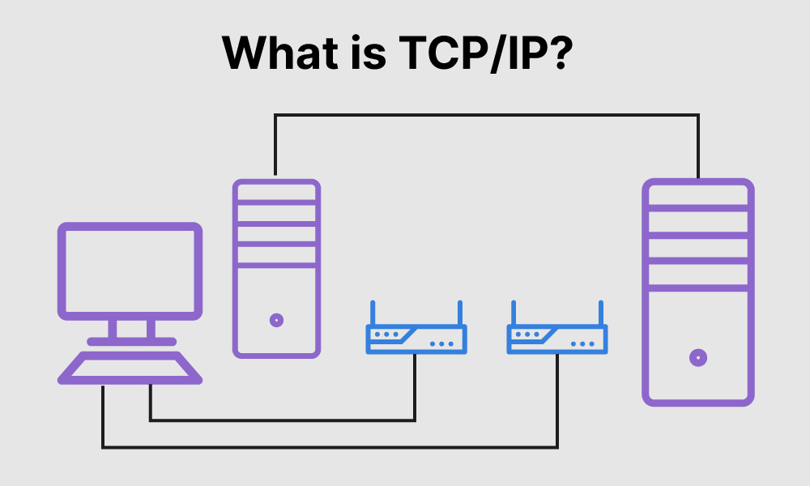

TCP/IP is a suite of communication protocols that is widely used for data communication over the internet. It is a transport-layer protocol, meaning it provides reliable, error-checked delivery of data between devices on a network.
Overview of the workings of TCP/IP: